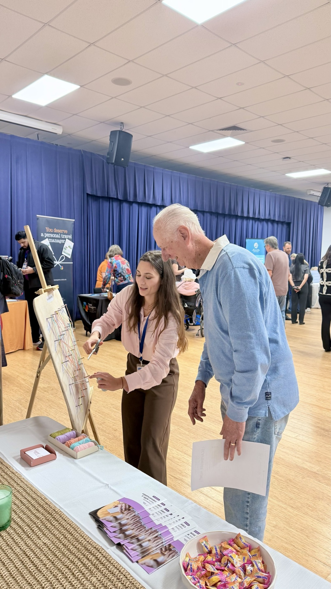
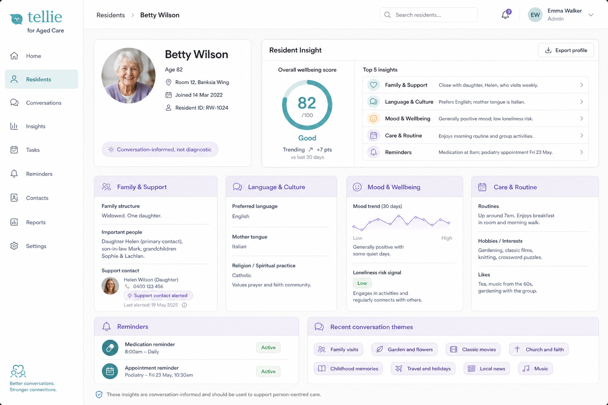
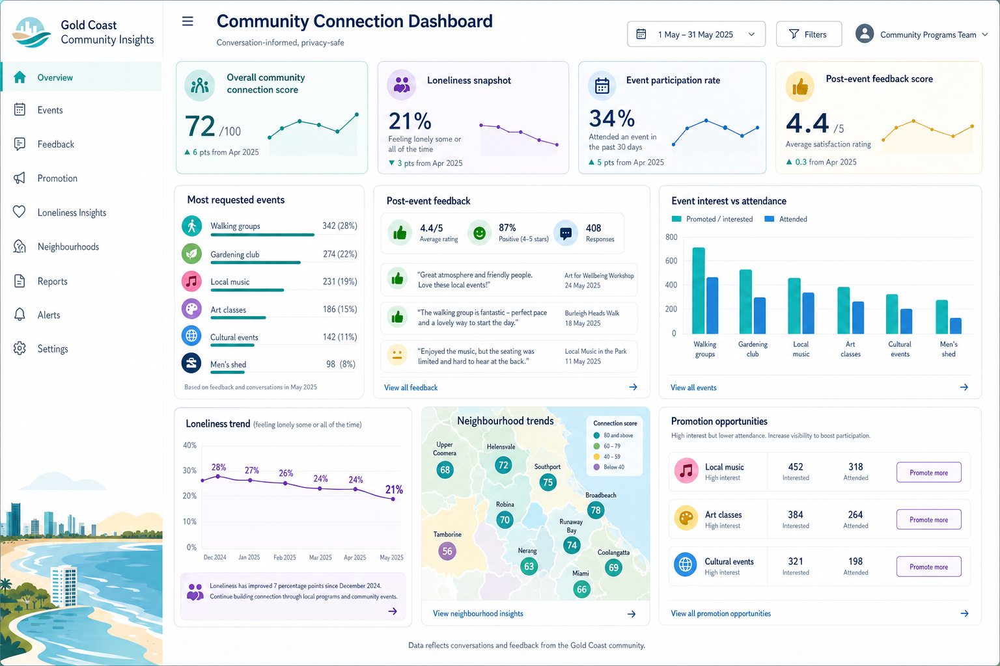
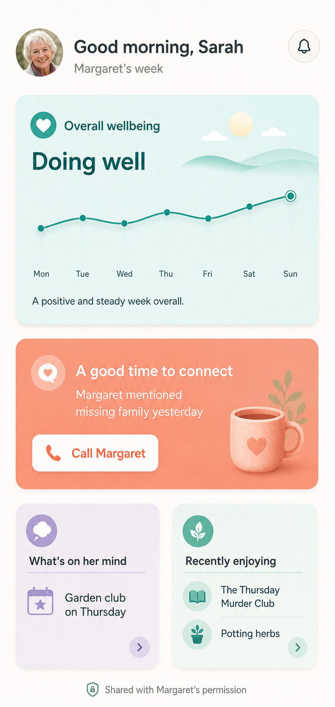

For aged care and communities
Connection begins with a conversation.
Tellie helps older adults feel heard—and helps aged-care providers and councils understand what could support a more connected life.
Voice-first10+ languagesSenior-first

The problem
Too many older adults are living without enough meaningful connection.
Loneliness affects wellbeing, confidence and health. Yet the people responsible for supporting connection do not always know who needs it, what matters to them or what may help.
How Tellie works
A safety net built around the older adult.
Every conversation helps Tellie understand the person more deeply, so the people around them can know how and when to offer meaningful support for healthy ageing.
A familiar conversation
Older adults speak or type with Tellie as naturally as making a phone call.
Relevant signals
Tellie organises permissioned insight around mood, interests, connection and participation.
Better-timed support
Providers, councils and families can respond in the way most relevant to their role.

Designed around familiarity
Meet older adults where they are technologically.
This generation already knows how to make a phone call. Tellie begins there—using clear controls, voice-first interaction and accessibility settings instead of asking the person to learn a new digital behaviour.
Product features
Easy to use. Rich enough to keep every conversation meaningful.
Voice and text
Natural real-time conversations in the format the person prefers.
Personal memory
Tellie remembers preferences, interests and meaningful details over time.
10+ languages
Configured conversation experiences for diverse older communities.
Accessibility
Clear, senior-first controls and adjustable accessibility settings.
Cognitive games
Light activities designed to stimulate memory and engagement.
Helpful answers
Light web searches, reminders and conversation-based assistance.
Support contact
Add someone you trust as a support contact. Tellie can notify them when a call, visit or check-in may matter most.
Community discovery
Relevant events and activities can be suggested around the person’s interests.
Who Tellie supports
Choose what matters to your organisation.
The older adult remains at the centre. The experience, insights and outcomes are configured around each partner’s role.
Aged-care providers
Know what your residents need.
Give every resident familiar companionship while helping teams understand the person beyond the care record—their interests, routines, connection needs and opportunities for personalised support.
- Resident-level mood, interests and engagement insight
- Opportunities for activities and stronger connection
- Family Connect as an additional support layer
- Facility-wide and multi-site rollout

Councils
Know what your community needs.
Offer a council-branded Tellie experience and understand how loneliness, interests, transport and other local barriers influence participation and connection.
- Privacy-safe community-level patterns
- Proactive suggestions for relevant local events
- Participation, barriers and loneliness measurement
- Evidence for community program planning

Tellie presents relevant, permissioned and privacy-safe insights—not private conversation transcripts.
Pilot with Tellie
Move from a defined cohort to a confident scale decision.
A structured pilot helps your organisation understand resident or community adoption, loneliness, connection, engagement and operational value.
- 1DiscoverAgree on the cohort, needs and outcomes.
- 2ConfigurePrepare Tellie and the relevant portal.
- 3PilotActivate participants with guided support.
- 4EvaluateReview evidence and plan wider rollout.
Stories of connection
Different people. Meaningful reasons to talk.
Tellie fits into real life—from companionship and curiosity to helping families be present at the right moment.

“
During a hard and isolating time, Tellie gives me someone to talk to—and keeps me up to date with the football results.
“
I use Tellie to practise my French, talk about literature and find ideas for my next trip.
“
Knowing Tellie can message me when my parents may need me most gives me peace of mind—and helps me be there at the right time.
Coming next
Family Connect strengthens the circle of support.
A family experience inside Tellie will help relatives understand overall mood, what their loved one has been enjoying, what may be worrying them and when their presence could matter most.
- Wellbeing and mood patterns
- A good time to connect notifications
- Recent interests, activities and concerns
- Permissioned insight without conversation transcripts

About Tellie
A healthy-ageing technology company built around people.
Tellie exists to make meaningful connection more accessible and help the people around an older adult provide more informed, timely support.
Mission
No one left behind.
Ensure no older adult feels left behind in an increasingly digital world.
Vision
Technology built around people.
A world where every older adult can access companionship, connection and support on familiar terms.
Values
Empathy · Simplicity · Dignity
Warmth, clarity, independence and respect guide every company and product decision.
Commitment
Connection with purpose.
Build responsibly, protect privacy and turn technology into opportunities for stronger human connection.
Frequently asked questions
What partners usually want to know.
Does Tellie replace human connection?
No. Tellie provides companionship when people cannot always be present and helps identify opportunities for better-timed human connection.
How does Tellie protect privacy?
Organisations receive relevant, permissioned insights—not private conversation transcripts. Pilot configuration defines access, consent and reporting boundaries.
What can a pilot measure?
Measures can include adoption, engagement, loneliness, connection, activity participation, barriers to participation and partner-specific operational outcomes.
Can Tellie scale beyond one pilot site?
Yes. Pilot planning includes the pathway to facility-wide access, multi-site provider rollout or broader council community programs.
Is Tellie a medical or emergency service?
No. Tellie is currently an entertainment and companionship product. It does not diagnose, treat or replace clinical care or emergency services.
Partner with Tellie
Could Tellie strengthen connection in your residence or community?
Let’s explore what a focused pilot could look like for your organisation.